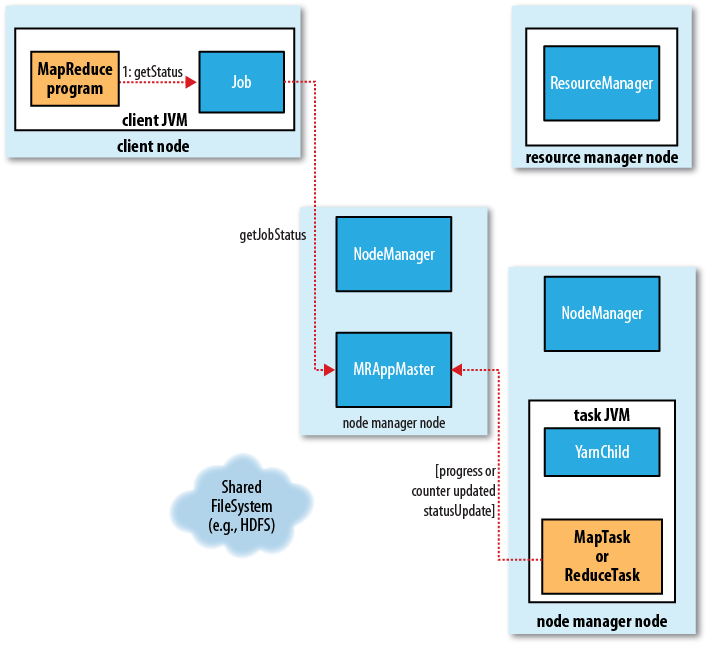

当前日期: 01/30/2013 Wed
How MapReduce Works
MapReduce工作机制
经典的MapReduce(MapReduce 1)

参与者:
- Client:, MapReduce Job的提交者
- Jobtracker:, 负责安排Job的运行，对应的 class 是 JobTracker.
- Tasktrackers: 负责运行由Job分解出的Task, 对应的 class 是 TaskTracker.
- Distributed Filesystem: 通常HDFS,用于共享Job相关的文件
提交Job:
- Step 1: 创建一个JobSubmitter实例，并调用其方法submitJobInternal(). (由Job的方法submit()触发)
-
方法
waitForCompletion()会每秒拉一次Job的状态与进度 -
提交的具体步骤：
-
Step 2: 向jobtracker请求一个新的job ID (
getNewJobId()) - 查看job的输出设置条件是否满足，比如输出文件夹是否存在，不存在不能运行
- 计算输入的分片，不能分片不能运行，比如输入路径不存在
-
Step 3: 拷贝job的相关资源到jobtracker的文件系统（jar,configuration,分片结果等），jar文件会有很多份
-
通过属性
mapred.submit.replication指定，默认为10 - 当运行Task时，可以很快速从集群中获得
-
通过属性
- Step 4: 告诉Jobtracker,job已准备好运行（调用JobTracker的submitJob() ).
-
Step 2: 向jobtracker请求一个新的job ID (
初始化Job:
- Jobtracker收到submitJob()的请求后，会把job放入一个队列里
- job scheduler会从队列里取出并初始化
-
Step 5: 创建一个代表job的对象
- 包含task信息
- 进度和状态信息
-
Step 6: 接受由client计算出的分片信息，创建要运行的task列表
- 为每一个分片创建一个map task
-
属性
mapred.reduce.tasks确定reduce task的数目 - 此时所有的task都会被分配id
-
还有两个额外的task会被创建：job setup task 和 job clean up task
- 用于在任何map task前启动一个job
- 用于在所有reduce task后，清理工作
分配Task:
-
Step 7: task tracker 会不间隔向job tracker发送心跳heart beat(使用一个循环体）
- 告诉job tracker,它还活着
- 也可以用于交换信息
- 比如告诉job tracker,已经准备好接收新的task, job tracker 就会分配给它一个新的任务
-
task tracker 会有一定数量的map task和reduce task的槽位
- 这两种槽位是相互独立的
- 具体的数量由cpu 核数和内存决定
- task tracker 会优先使用map task的槽位
- 对于reduce task, job tracker只是简单的取出运行
- 对于map task, job tracker会尽量选取距数据最近的task tracker运行，最好在同一个data node 上
运行Task:
- task tracker 分配到一个task, 接下来就是运行这个task
-
Step 8: 接收所需的文件
- 将job jar和所需要的一切文件拷到本地系统
- 为task创建一个本地目录，并将jar解压
- 创建一个 TaskRunner 实例，用于运行task
- Step 9: 启动一个新的JVM
- Step 10: 运行task
- 子进程会每隔几秒钟向父进程回报一下task进度，直到task完成
- 每一个task都会运行setup和cleanup操作
进度与状态报告:
- 当一个task运行时，会记录它的进度
- 当task进度发生变化时，会设置一个flag,表明需要向task tracker汇报进度
- 有一个独立线程会每隔３s检查一个这个flag,如果需要就通知task tracker当前的进度
- task tracker会每５s向job tracker发送一个心跳，如果有信息会随着一起发送
- client的job每秒向job tracker拉一次状态

Job完成:
- job tracker收到最后一个task的完成通知后(cleanup task)
- 将job设为成功
-
属性
job.end.notification.url可以配置一个需要http通知的url
二代:Yarn(MapReduce 2)
在4000个结点以上的集群中，上述方案的水平扩展就会遇到瓶颈，所以有了YARN:
- Yet Another Resource Negotiator
- YARN Application Resource Negotiator
-
YARN通过分解Jobtracker的工作来达到扩大水平扩展能力的手段。jobtracker 的两项职责：
- job scheduling 分配task给tasktracker
- 监视task的执行进度
-
YARN将这两项职责分给两个独立的后台进程：
- Resource Manager: 管理集群上资源的使用
- Application Master: 管理运行于集群上的application的生命周期，application对应job
基本思路:
- 此处的application就是mapreduce job
-
application master与resource manager协商集群上的资源 -
资源表现为容器
containers, 它有一定的内存限制 -
application的进程就运行于这些
containers上 -
这些
containers会被运行于集群结点上的node manager监管，避免application使用超过分配给它的资源 - 目前集群上的资源就是内存
与jobtracker相比，每一个application拥有自己的 application master , 运行于application的期间，application就是mapreduce job

参与者:
- Client:, MapReduce Job的提交者
- YARN resource manager: 管理协调集群上的计算资源
- YARN node managers: 启动并监视其所在结点上的计算容器
-
MapReduce application master: 管理协调一个mapreduce job的所有task. application master 和 job的 task运行于由
resource manager调度安排并由node manager管理的计算容器中 - Distributed Filesystem: 通常HDFS,用于共享Job相关的文件
提交Job:
-
Step 1: 创建一个JobSubmitter实例，并调用其方法submitJobInternal(). (由Job的方法submit()触发)
- 和MapReduce 1使用一样的api
-
通过属性
mapreduce.framework.name设置为yarn激活YARN
-
Step 2: 从
resource manager获取一个新的application id -
client 计算分片
- 分片也可以在集群中计算
-
通过属性
yarn.app.mapreduce.am.compute-splits-in-cluster激活
- Step 3: 拷贝application的相关资源到HDFS（jar,configuration,分片结果等），jar文件会有很多份
-
Step 4: 在
resource manager调用 submitApplication() 提交一个application
初始化Job:
-
Step 5a: scheduler 分配一个
container -
Step 5b:
resource manager在这个container上运行application master, 并在node manager的管理下 -
Step 6:
applicaiton master初始化一个application-
applicaiton master对应类 MRAppMaster - 创建一系列对象追踪job的进度
- 稍后它会从task处得到进度和完成信息
-
-
Step 7:
applicaiton master从分布式系统中获取计算好的splits -
application master创建tasks:- 为每一个split创建一个map task
-
创建redeuce task, 数量由属性
mapreduce.job.reduces指定
-
如果是一个小的job,
application master将会在它自身的jvm上运行些task,如果判定这是一个小的job :-
mapreduce.job.ubertask.maxmaps默认值10 -
mapreduce.job.ubertask.maxreduces默认值1 -
mapreduce.job.ubertask.maxbytes默认值HDFS Block -
mapreduce.job.ubertask.enable默认值true
-
分配Task:
-
Step 7:
applicaiton master向resource manager申请运行map task和reduce task所需的资源containers -
为task分配内存,通过下列属性来指定
-
mapreduce.map.memory.mbmap task的内存 默认:1024M -
mapreduce.reduce.memory.mbreduce task的内存 默认:1024M -
yarn.scheduler.capacity.minimum-allocation-mb最小值限制，默认为1G -
yarn.scheduler.capacity.maximum-allocation-mb最大值限制，默认为10G - 分配给task的内存必须在最小值和最大值之间，且是最小值的整数倍
- 如果不是整数倍，会自动上升为整数倍
-
运行Task:
-
task被分配了一个资源
container -
Step 9a:
application master通知相应的node manager运行这个container - Step 9b: 通过类YarnChild启动一个新jvm
- Step 10: 从分布式缓存中获取运行task所需的资源：jar configuration etc.
- Step 11: 运行这个task
进度与状态报告:
-
task向
application master汇报进度与状态 -
application master每三秒绘聚一次整个job的概况 -
client 每秒向
application master拉取一次job的进度与状态-
可能通过属性
mapreduce.client.progressmonitor.pollinterval修改这个时间值
-
可能通过属性

Job完成:
-
client会向
application master轮询job是否完成- 通过调用Job的方法waitForCompletion()
-
间隔时间通过属性
mapreduce.client.completion.pollinterval指定
-
一旦完成：
-
application master和containers执行cleanup操作 - 调用OutputCommiter的cleanup方法
- job的信息被job history server归档
-
处理失败
经典MapReduce(MapReduce 1)的失败
task失败:
-
RuntimeException
- 退出前通知tasktracker
- 将这个task attempt标记为失败
- tasktracker释放一个task slot,等待新的任务
-
流式task非0退出码
-
通过属性
stream.non.zero.exit.is.failure设置
-
通过属性
-
jvm进程突然结束
- tasktracker发现task进程结束
- 将这次task attemp标记为失败
-
task长时间挂起
- tasktracker在一定时间内收不到进度报告，标记为失败
-
通过属性
mepred.task.timeout设置超时时间 - 0这关掉该特性，永不超时
-
jobtracker 发现一个 task attempt 失败
- 重新高度这个task
- 会尽量避免使用这个task上次失败所在的tasktracker
- 同一个task默认失败4次，就不会在重试
-
可以通过属性
mapred.map.max.attempts和mapred.reduce.max.attempts设置
-
task失败达到一定比例后，才会标记一个job的失败,job退出执行
-
通过属性
mapred.max.map.failures.percent和mapred.max.reduce.failures.percent设置
-
通过属性
tasktracker失败:
- tasktracker失败，就不会向jobtracker发送心跳
-
jobtracker长时间收不到tasktracker的心跳，就会标记tasktracker失败
-
通过属性设置这个时间
mapred.tasktracker.expiry.interval默认为10分钟
-
通过属性设置这个时间
- jobtracker会将该tasktracker从池中移出，不再参与task的分配
- 在那个tasktracker上所有未完成job的所有task都会重新执行，因为那个tasktracker的所在机器很可能不能访问了
-
tasktracker 黑名单
-
同一个job的task失败数超过4个，就会标记该tasktracker失败，通过属性
mapred.max.tracker.failures设置 -
一个tasktracker失败超过4次，就会加入黑名单, 通过属性
mapred.max.tracker.blacklists设置 - 黑名单中的tasktracker不参与task的分配
- 黑名单有过期时间，为1天
-
同一个job的task失败数超过4个，就会标记该tasktracker失败，通过属性
jobtracker失败:
- 这是很严重的错误，单点错误，没有有效的应对方案
-
一个失败的jobtracker重启后，会尝试恢复相关的job
-
通过属性
mapred.jobtracker.restart.recover开启这项功能，默认是关闭 - 但这项功能并不可靠，不见意使用
-
通过属性
YARN(MapReduce 2)中的失败
task失败:
-
RuntimeException
-
退出前通知
application master - 将这个task attempt标记为失败
-
退出前通知
-
流式task非0退出码
-
通过属性
stream.non.zero.exit.is.failure设置
-
通过属性
-
jvm进程突然结束
-
application master发现task进程结束 - 将这次task attemp标记为失败
-
-
task长时间挂起
-
application master在一定时间内收不到进度报告，标记为失败 -
通过属性
mepred.task.timeout设置超时时间 - 0这关掉该特性，永不超时
-
-
如何确定一个task的失败
- 重试4次,还不成功
-
可以通过属性
mapred.map.max.attempts和mapred.reduce.max.attempts设置
-
task失败达到一定比例后，才会标记一个job的失败,job退出执行
-
通过属性
mapred.max.map.failures.percent和mapred.max.reduce.failures.percent设置
-
通过属性
application master失败:
- 实际上就是job的失败
-
job可以有重试一次，默认是一次
-
可以通过属性
yarn.resourcemanager.am.max-retries修改
-
可以通过属性
-
重试
- resource manager会分配一个新的container运行一个新的applicaiton master
- application master会重新运行所有的task
- 但application master可以只运行那些还未成功的task
-
通过属性
yarn.app.mapreduce.am.job.recovery.enable开启这个功能 - client 会经历一个timeout后，从resource manager获取新 application master 的地址
node manager失败:
- node manager 失败
- 就不会向resource manager发送心跳
-
resouce manager长时间收不到心跳
-
通过属性
yarn.resourcemanager.ns.liveness-monitor.expiry-interval-ms设置
-
通过属性
- resouce manager就会将结点从结点列表中去除
- 而在该结点上所有的task和application master都会根据前面的规则进行recovery
-
node manager黑名单
- 超过三个task失败
-
通过属性
mapreduce.job.maxtaskfailures.per.tracker设置
resource manager失败:
- resouce manager被设计成可以持久化保持状态
- resouce manager失败后
- resouce manager会重启并恢复状态
- 状态信息由node managers和正在运行的job组成
Job的调度
Shuffle和排序
Task的运行
© 2012 王兴朝